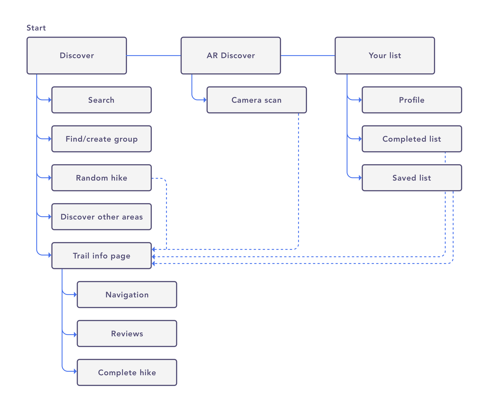

Atlas
Nov 2018
During July of 2018, I was sent away to Alberta for a client project while I was interning at Deloitte. Naturally I spent my weekends in the mountains since that is what Alberta is most known for. I’ve never seen mountains before until I arrived in Banff—I wanted to explore and hike everything I could see.
While on top of Sulphur Mountain starring at the endless view of mountains, I came to a realization. What if I could receive information on a mountain through pointing my phone camera at it? As a sole Product Designer on this project, I spent my time researching, designing, prototyping and testing this concept.
My personal goals for this project
This project was meant for the development of my skills in various areas in design. I wanted to:
- Conduct and analyze my own user research, which included surveying, interviewing users, and creating personas
- Explore various user testing methods I’ve never tried before in attempt to creating a better product
- Improve my visual and UI design skills using Sketch
- Develop my interaction design skills, including the creation of animated prototypes on Origami Studio and Adobe After Effects
User research and analysis
Before I began this project, I surveyed 23 users and conducted 6 interviews on users that have experience in hiking in mountains when travelling.
To better understand the decision making behind choosing hikes, I asked users to rank their top reasons for choosing a hike. The top 3 reasons were:
- Scenery and view
- Difficulty level — this includes elevation, distance, and length of time
- Location— how far the hike is from where the user currently is
Ranking of most important qualities users look for in a hike from most to least important by data collected from interviews and survey
Other sample insights I pulled from my research:
- Hazards and safety was also important in the decision-making process—sites and apps that listed information for hikes did not have this type of information available
- 50% of the users I interviewed said that it was difficult to find the trailhead or they were confused about the paths
- 82.6% of users that were surveyed said they were interested in learning about the history of a mountain they were hiking; 1 users I interviewed also said that the history and uniqueness of a mountain is one reason why they decide to hike a certain mountain
- 65.4% of users discover hikes through a Google search, or from friends or family
- According to users and secondary research, difficulty levels, time and distance of hikes were inconsistent throughout different sites, blogs, and apps
How users discover hikes and how they plan routes for hikes — data collected from survey
Persona of a hiker
For my interviews I wanted to talk to users that typically did not hike often or at all, and users that were experienced in hiking. Luckily I was also able to talk to users that were from a mountainous region where hiking would be much more common.
Below is what the average experienced and beginner hiker looks like based on the data I collected from my interviews.
Wireframes, initial designs and flow
After creating my personas and insights, I started drawing wireframes with pen and paper, and mid-fi on Sketch as well.

After completing the first version of screens, I tested it on 5 users with various testing methods. In between testing sessions, I was reiterating the design based on the feedback I collected from the previous testing session in preparation for the next.
Iterations for the components of Atlas based on research, testing and/or visual preference.
User flow
Below is the user flow I created for Atlas. Through creating this flow, I realized that the trail info page is the most important feature of this concept as most parts of the app will go back to it.
Task flow
I also created a task flow for the AR Discovery and Save to list feature.
Discovering mountains using AR
The idea that sparked this entire project. Once a user sees a mountain, they would be able to scan it by holding down the screen. As the app finds the mountain, the user would be able to preview some basic information on the mountain. By swiping up on the bottom drawer, users can see a full detailed profile of that mountain including the hiking information such as hazards and routes.

Animated prototype created on Adobe After Effects
Improving the hiking discovery experience
Through my research, I discovered there was a need for additional and accurate information for hiking trails.
- Hazards + Additional Info: Users are typically concerned with how dangerous the hike would be which would impact their decision making. For instance, one user usually avoids hikes where they must scale or climb rocks to get to the peak. Bears, unpaved and pet-friendly trails was also a concern for some users as well.
- Weather: Beginners were not prepared for hikes on mountains with high peaks because they were unaware of the temperature and weather difference closer to the top.
- Sunset/Sunrise: 50% of the experienced users has said that they time their hikes so that they would be able to catch a perfect sunset view from the peak. I included times of when the sun will rise/set and the direction of where the sun will be setting/rising.
- Peak times: 50% of the users I interviewed has mentioned that they prefer hiking in less populated areas because they enjoy the solidarity and peace. A card was designed to show users when the trail would be populated by time and day.
- Navigation: 50% of the users have mentioned that some apps or websites have confused them on getting them to the trailhead or the trail splitting in different paths. During testing, some users also showed interest in Atlas helping them navigate during the trail.
A closer look at the Mountain info page.
For each testing session, I had my users card sort the information with sticky notes so that I could understand their decision making and improve the information architecture of the hiking info page.
Generally, each user had similar ways of thinking in how and why they sorted the cards.
- 83.3% of the users put Hazards + Additional Information as the top card. This showed that this was their primary concern when choosing a hike due to safety reasons.
- 66.7% of the users put Weather and Peak Elevation last because they considered those cards as supplementary information for when they go on the hike and not part of their decision making
- 83.3% of the users considered Reviews to be important in their decision making because they consider past experiences as an important factor when choosing a hike. Although they considered it to be important, 75% of those users put reviews closer to the bottom of the page because it is a pattern that they are used to.
- Users considered Elevation Profile and Route Map as closely related due to Elevation Profile showing the Y-view of the hike and Route Map as the X-view.
Review system on Atlas
As I discovered that users considered past experiences to be an important decision making factor, I decided to improve the review page. Users will be able to see the breakdown of review scores and the review itself. During testing users said that Scenery and view, and Ease of getting to trailhead was important for them to know. I also added the ability to search for keywords and as well as upvoting/downvoting reviews.
Inaccuracy of information across different sites, blogs, and apps
Through talking to users and some secondary research, I discovered that information such as elevation gain, time, difficulty and distance of each hikes varied between different sites, blogs and apps.
What if Atlas was able to average the time it took for users to complete the hike and adjust the difficulty rating based on past experiences? After a user completes a hike, they are able to add it to their list but I added an extra step to this flow. An optional form of how long it took them to complete the hike and how difficult it was for them. Atlas would be able to auto-adjust this information based on your own experience level.

Finding hikes that fit the user’s preferences
65.4% of users I interviewed has said that they discover hikes through a Google search or from their friends/family. Typically the process looks like this for these users:
- Google search “hikes in area” e.g. Banff, Alberta
- Look through websites or blogs (e.g. Narcity) and search for something that suits their needs
- Go back on Google and research on the hike that they planned to do
- Repeat the process if they discovered that the hike is undoable, e.g. hazards such as bears or minimum group requirements
The Atlas Discover page will be able to help users find hikes in their area based on their experience level and will be able to sort or filter through these options, essentially streamlining this process as the hiking discovery experience is now packaged in one app.

I wanted to try two different layouts for ‘Discover’ and decided to A/B test these layouts on my users. I wanted to understand how quick and easy it was for users to find something they were looking for.
I gave a different scenario for each layout during this test.
Scenario A: You want to find a hike that suits your experience level of intermediate, and one that is around 6 hours. You’re also looking for a nice looking view and scenery (personal preference).
Scenario B: You want to find a hike that suits your experience level of medium, and one that is around 4 hours as the sun is setting quickly. You’re also looking for a nice looking view and scenery (personal preference).
Here are my findings from the A/B test.
Layout A
- Users took an average of 33.32 seconds to find what they were looking for
- It took a while for users to expand the group to see more hikes as they initially thought the card stack were more pictures
- Users liked this layout because they were able to see 3 different options on one screen (with a much larger image of the hikes) vs. only 2 on layout B
Layout B
- Users took an average of 26.1 seconds to find what they were looking for, which was faster than layout B
- The layout was more clear to the users that this was a group of hikes as opposed to layout A
- Because of the way this page was laid out, it had the ability to auto-scroll to different cards when you click on the map which users liked a lot
Because layout B was a lot easier to understand and quicker for users to find what they need, I naturally went with this one and reiterated based on feedback.

High fidelity prototype made on Origami
What I’ve learned
I’ve learned a lot about design and testing from the past month while working on Atlas. Here are some key lessons that I’ve learned from this project.
Designing systematically
After designing multiple components for Atlas and individually testing for a few, I figured out that it would’ve been much easier and faster to do it this way than designing it the entire project feature by feature. Testing and reiterating each component through data and feedback, and then putting it all together would make a product better overall.
Research & testing feedback
As I was eager to start my project, I went straight into my research without reiterating my test plans or receiving feedback from others. Through interviewing and testing on users, each session I was able to discover what was working and what wasn’t, and was able to improve that component of my testing for next time.
Try something new
One of the main goals for this project was for me to try something new. For someone with no experience in A/B testing and card sorting with users, I was able to grasp these concepts quickly and saw how much these testing methods would improve a product. Different testing methods work depending on the situation but I would definitely try other methods I haven’t yet next time.
Practicing my prototyping skills
Learning a new tool is tough and scary at first but through creating prototypes on Origami Studio, I was able to dig deep into the tool and learn the powerful features of it. There were many times I was stuck on an error for hours or days but through trial and error and perseverance I was able to discover what I was doing wrong and can now creating prototypes (hopefully) a lot faster.
There are many areas where I could improve for next time on Atlas. For instance, if I were to continue on this project I would look more deeply into the visual design and accessibility of Atlas. For example, during the end of my testing sessions, a user pointed out that as people would be using this app outdoors, I would have to consider the environment and sun reflecting on the screen.
I could continue researching, testing and reiterating different features on this project for months but I thought this was a good point to wrap this project up. After a month of designing, I’ve definitely learned a lot about myself as a designer!